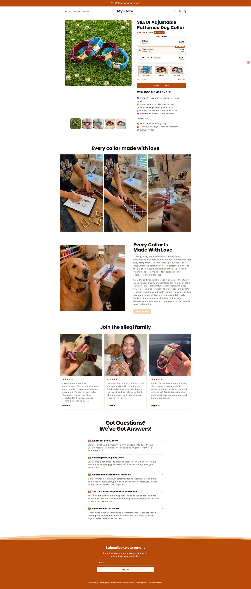
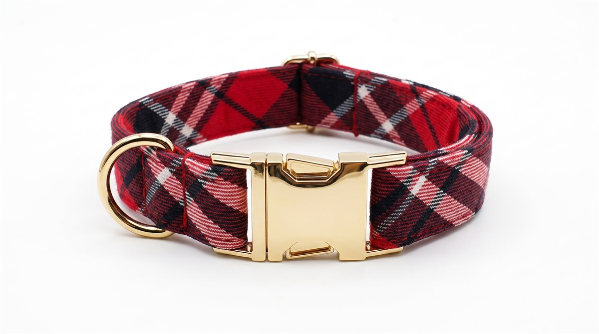
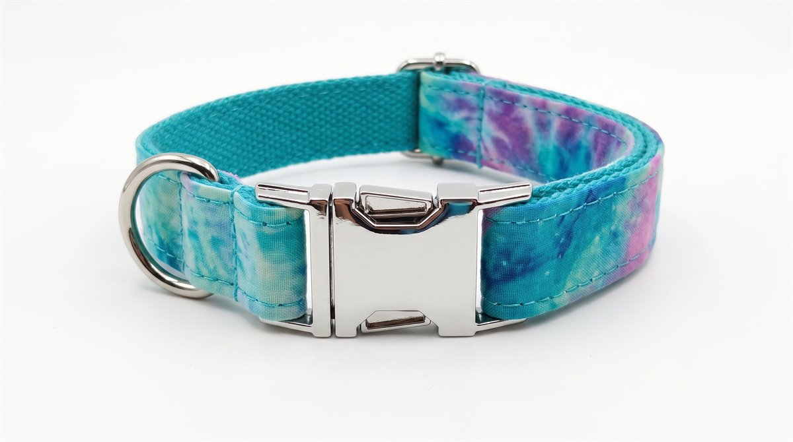

90条
宠物内容选题
覆盖 9 类内容系列
我的工作方法
EVIDENCE / 项目证据
以下数据来自实际搭建的飞书多维表格与项目资料。它们代表已经完成的规划、素材与追踪记录， 不等同于未经验证的营收成绩。
覆盖 9 类内容系列
细化到账号、道具与优先级
TikTok / Instagram 双平台
沉淀互动与网站引导话术
CASE 01 · PET CONTENT SYSTEM
围绕宠物搞笑赛道，完成账号定位、人设差异、内容系列、10 天排班、场景分配与发布打卡设计。 核心不是堆积创意，而是减少每天“从零开始”的成本。

CASE 02 · SHOPIFY PRACTICE
在 Shopify 中完成狗狗项圈商品页首版，实践商品结构、组合优惠、颜色选择、信任内容与 FAQ。 同时围绕“用户不知道销售网站”的问题，补充主页置顶内容与评论区网站引导。
商品页首版、竞品与定价研究、组合选项、信任内容、移动端页面检查
真实流量质量、商品页转化率、支付与履约闭环、稳定盈利能力


CAPABILITY / 能力结构
把大模型、图像与视频生成能力转译为稳定的选题、提示词和镜头执行流程。
从账号定位、人设、排班到发布追踪，建立可持续迭代的内容运营节奏。
习惯把模糊任务拆成字段、状态、验收标准和数据反馈，让协作可追踪。
完成商品页首版搭建，实践定价、组合优惠、信任模块与流量承接链路。
我更看重“能否形成结果闭环”，而不是“掌握了多少工具名称”。
ROADMAP / 职业路径
我的长期方向不是脱离业务做“工具专家”，而是在真实项目中同时理解内容、流量、转化和团队协作。
现在—6个月
1—3年
3—5年
5年以上